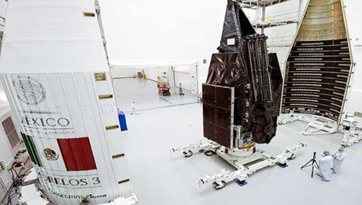
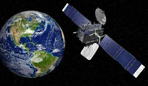
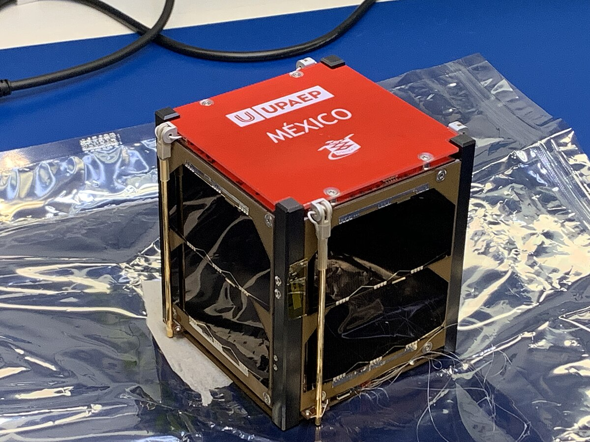
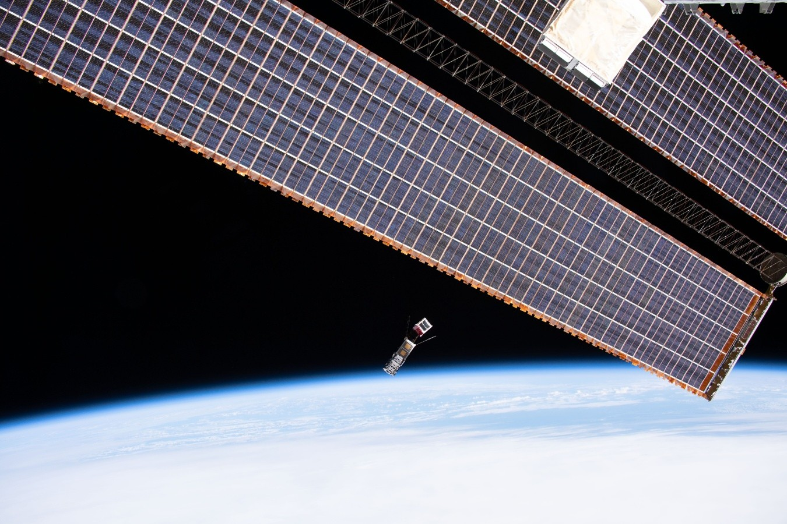

Contexto
El desarrollo espacial de México ha estado marcado por una evolución desde programas de telecomunicaciones gubernamentales hacia iniciativas educativas y de desarrollo tecnológico. La Agencia Espacial Mexicana (AEM), establecida en 2010, coordina los esfuerzos nacionales en materia espacial, aunque históricamente el país ha dependido de proveedores internacionales para el desarrollo de satélites.
Contextualmente, México ha priorizado el uso del espacio para telecomunicaciones, seguridad nacional y desarrollo de capital humano. El país combina la adquisición de infraestructura satelital avanzada con programas educativos que buscan formar una base tecnológica nacional. El presupuesto espacial mexicano es significativamente menor que el de otras agencias espaciales, lo que ha impulsado un enfoque pragmático centrado en colaboraciones internacionales y desarrollo de capacidades específicas.
Serie Satelital Morelos
/imagenes_w/Serie%20Satelital%20Moreos_Mexico.jpg?raw=true)
Antecedentes
La Serie Satelital Morelos representa el primer esfuerzo sistemático de México para establecer una capacidad satelital propia. Iniciado en la década de 1980, este programa buscó dotar al país de infraestructura de telecomunicaciones independiente que permitiera cubrir el vasto territorio nacional, incluyendo regiones remotas y de difícil acceso donde la infraestructura terrestre resultaba económicamente inviable.
Desarrollo
El programa de satélites Morelos originales operó con éxito durante más de una década, proporcionando servicios de telefonía, televisión y transmisión de datos. Su sucesor, el programa MEXSAT, tuvo como objetivo expandir esta cobertura con satélites más potentes, como el Centenario (Morelos-3). Para su ejecución, se siguió un modelo de contratación internacional para el diseño, construcción y lanzamiento de los satélites, complementado con la implementación de estaciones de control terrestre en territorio mexicano.
Resultados
Los satélites permitieron extender comunicaciones en áreas remotas, facilitar servicios de emergencia y fortalecer capacidades de seguridad nacional. Morelos-3 incrementó capacidad geomóvil (L-band) y resiliencia del servicio para aplicaciones civiles y gubernamentales, estableciendo una base sólida para las comunicaciones satelitales mexicanas.
Consecuencias
Si bien la serie Morelos otorgó autonomía operativa para ciertas aplicaciones, la dependencia de proveedores extranjeros en diseño y lanzamiento generó cuestionamientos sobre transferencia tecnológica y sostenibilidad. Además, la política espacial mexicana ha mostrado fluctuaciones administrativas recientes que afectan la continuidad de proyectos y la planificación a largo plazo. El programa sentó las bases para el desarrollo de capacidades nacionales en operación satelital, aunque la fabricación local sigue siendo un desafío pendiente (Boeing; AEM).
Programa MEXSAT

Antecedentes
Con el sistema Morelos ya operando, México identificó la necesidad de dar un salto tecnológico en telecomunicaciones satelitales, especialmente para servicios móviles, de seguridad, cobertura de emergencia, y para sustituir satélites que estaban llegando al fin de su vida útil. De esta manera surge el programa MEXSAT, el cual busca contar con satélites más avanzados que el sistema previo, orientados a telecomunicaciones fija y móvil, cobertura del territorio nacional, seguridad y emergencias.
Desarrollo
El satélite Mexsat 3 "Bicentenario" fue lanzado el 19 de diciembre de 2012, mientras que el satélite clave Morelos III (en el marco del MEXSAT) fue lanzado el 2 de octubre de 2015. Estos satélites fueron fabricados por empresas internacionales - para el caso de Morelos III, Boeing fue el responsable - y posteriormente la operación fue asumida por la empresa estatal especializada Telecomunicaciones de México (Telecomm) y autoridades mexicanas.
El desarrollo supuso la modernización de la flota satelital, cobertura móvil, bandas L/Ku, prestación de servicios en zonas remotas, y soporte de comunicaciones gubernamentales y de seguridad. El programa representó una inversión significativa en infraestructura espacial crítica para el país.

Resultados
Con el satélite Morelos III se consolidó el sistema satelital mexicano MEXSAT. La cobertura de telecomunicaciones se amplió, especialmente para gobierno, seguridad, emergencias, y población que habita en zonas de difícil conectividad. México asumió la operación de los satélites desde territorio nacional teniendo actualmente ingenieros mexicanos manejando el satélite Morelos III, desarrollando capacidades técnicas nacionales en operación satelital.
Consecuencias
El programa fortaleció la infraestructura de telecomunicaciones satelitales del país, lo cual es relevante para cadenas de comunicación nacional, gobierno, defensa y emergencias. Facilitó llevar servicios de comunicación a poblaciones remotas, contribuyendo a la inclusión digital. Sin embargo, es necesario remarcar que el programa dependió de tecnología internacional para fabricación y lanzamiento, lo cual evidencia que la industria espacial mexicana aún tiene retos para producir satélites propios.
Los programas satelitales tienen alto costo de adquisición, lanzamiento, operación y mantenimiento, por lo que requieren continuidad presupuestal y actualización tecnológica. MEXSAT sirvió como plataforma de aprendizaje técnico, operación satelital y recursos humanos para el desarrollo espacial de México, sentando las bases para futuros desarrollos nacionales (Telecomm; AEM; Boeing).
AztechSat - Programa de Nanosatélites

Antecedentes
Más recientemente, la Agencia Espacial Mexicana (AEM) ha estado promoviendo programas de nanosatélites y educación para formar capital humano en la industria espacial. El interés se centró en involucrar a universidades mexicanas, estudiantes y la comunidad científica para el desarrollo de tecnología espacial a menor escala, como satélites pequeños (CubeSats/nanosats), colaboración internacional y la formación técnica.
Desarrollo
AztechSat-1 fue lanzado el 5 de diciembre de 2019 a bordo de la misión de reabastecimiento de la Estación Espacial Internacional (ISS). Fue desarrollado por estudiantes de la Universidad Popular Autónoma del Estado de Puebla (UPAEP) en colaboración con AEM y NASA, marcando un hito como segundo nanosatélite mexicano desde 1995. El proyecto demostró la viabilidad de desarrollar tecnología espacial con participación mayoritariamente nacional.
Aunado a lo anterior, México tiene planes para lanzar otro nanosatélite (GXIBA 1) en 2025, con misión de monitoreo volcánico en colaboración con la agencia japonesa Japan Aerospace Exploration Agency (JAXA) y la Oficina de Asuntos del Espacio Exterior de la ONU (UNOOSA), expandiendo las aplicaciones hacia observación terrestre con relevancia nacional.

Resultados
Con AztechSat-1, México demostró su capacidad de desarrollar tecnología espacial de escala educativa/experimental, con participación de estudiantes y cooperación internacional. Esto genera experiencia en operación de nanosatélites, vinculación académica-industrial, y abre camino para proyectos más ambiciosos. El proyecto GXIBA-1 apunta a aplicaciones de observación de la Tierra (monitoreo de volcanes), lo que añade valor práctico al sector espacial mexicano.
Consecuencias
El programa fortalece la formación de ingenieros, científicos y técnicos en México en el ámbito espacial, lo cual es clave para desarrollo futuro. Permite que México participe en segmentos emergentes del espacio (nanosatélites, constelaciones más pequeñas, educación) con menor coste que grandes satélites. La colaboración con NASA, JAXA, entre otras agencias, posiciona a México en la comunidad espacial internacional, facilitando futuras alianzas.
Sin embargo, al tratarse de nanosatélites, las capacidades son limitadas comparadas con satélites grandes; además, el salto hacia fabricar y lanzar satélites más grandes o crear lanzadores propios aún es un reto. Estos programas pueden servir como base para desarrollar una industria espacial nacional más sólida, con el tiempo apuntando a misiones de mayor escala (AEM; NASA; UPAEP; UNOOSA).
Página principal